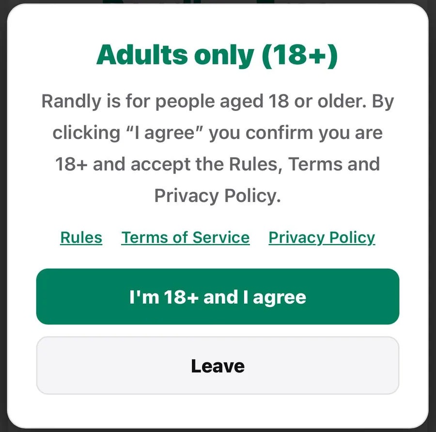

Randly vs Ome.tv: Welcher Zufalls-Videochat ist 2026 besser?
Informationen geprüft:
Dieser Vergleich stammt vom Randly-Team und ist keine unabhängige Rangliste. Wir trennen Funktionen unserer eigenen Implementierung von den Informationen, die OmeTV über seinen Dienst veröffentlicht.
Länder- und Interessenfilter sind Wünsche und keine Garantie für eine sofortige Verbindung. Entscheidend sind die verfügbaren Teilnehmer. Textübersetzung kann Fehler machen und übersetzt keine Live-Stimmen. Eine Flagge schätzt den Standort einer Internetverbindung, nicht Nationalität oder Identität. Eine Altersbestätigung beweist nicht, dass alle Teilnehmer erwachsen sind.
Offizielle Quellen: OmeTV · FAQ · Rules.
So haben wir verglichen
Wir haben die aktuelle Umsetzung von Randly und die Angaben auf den oben verlinkten offiziellen OmeTV-Seiten geprüft. Ein kontrollierter Leistungs- oder Moderationstest wurde nicht durchgeführt. Verfügbarkeit und Anmeldeanforderungen können sich unterscheiden und ändern.
- Kann ich loschatten, ohne ein Konto zu erstellen?
- Welche Funktionen sind kostenlos, und welche kosten Geld?
- Kann ich ein Land auswählen?
- Gibt es eine Live-Übersetzung?
- Gibt es nur Video, oder kann ich auch per Text chatten?
- Funktioniert es im Browser, oder ist eine App nötig?
- Gibt es eine Möglichkeit, schlechte Nutzer zu melden und zu sperren?
- Macht die Seite deutlich, dass sie nur für Erwachsene ist?
Das sind dieselben Fragen, die sich die meisten Leute stellen, bevor sie sich für eine Zufallschat-Seite entscheiden. Deshalb haben wir damit den folgenden Vergleich aufgebaut.
Kurzvergleich
| Funktion | Randly | Ome.tv |
|---|---|---|
| Preis | Kostenlos, kein Bezahlabo, alle Funktionen inklusive | Kostenloser Videochat laut FAQ |
| Registrierung erforderlich | Nein | Anmeldung in der FAQ beschrieben |
| Länderauswahl | Ja, kostenlos | Länderauswahl angegeben |
| Live-Übersetzung von Nachrichten | Ja, kostenlos, 12 Sprachen | Nachrichtenübersetzung in der FAQ angegeben |
| Videochat | Ja | Videochat angegeben |
| Textchat | Ja | Textnachrichten während des Videochats |
| Abgleich nach Interessen | Ja | In dieser Prüfung nicht verifiziert |
| Funktioniert im Browser | Ja, keine App nötig | Website und mobile Apps |
| Melden und Sperren | Ja | Meldungen und Sperren in den Regeln beschrieben |
| Altersbestätigung beim Betreten | Ja, 18+-Abfrage auf dem ersten Bildschirm | Nur Erwachsene; aktuelle Regeln prüfen |
Randly enthält außerdem ein integriertes XO-Minispiel, ebenfalls kostenlos.
Zugang und Preis
Das ist wichtiger, als es klingt. Registrierung heißt: Benutzernamen wählen, Angaben eintragen und warten, und an diesem Punkt schließen viele Leute einfach den Tab. Wenn du Zufallschat fünf Minuten lang ausprobieren willst, passt eine Seite, auf der du sofort loslegen kannst, deutlich besser.
Matching und Filter
Der Abgleich nach Interessen verändert auch das Gefühl der Chats. Wenn du mit jemandem zusammengebracht wirst, der dieselben Spiele, dieselbe Musik oder dieselben Themen mag, musst du dir kein Gespräch aus dem Nichts ausdenken. Du hast schon etwas, worüber ihr reden könnt.
Video- und Textchat
Beide Möglichkeiten zu haben, ist in der Praxis nützlich. Manchmal bist du an einem Ort, an dem du Kamera oder Mikrofon nicht benutzen kannst, oder du tippst einfach lieber, besonders wenn du eine Sprache übst. Mit Textchat kannst du die Seite auch in solchen Momenten nutzen.
Sprache und Übersetzung
Beide Dienste beschreiben eine Nachrichtenübersetzung. Bei Randly betrifft sie Text, nicht gesprochenen Ton. Nutzen Sie sie als Hilfe: Schreiben Sie kurze Sätze und klären Sie wichtige Bedeutungen mit Ihrem Gegenüber.
Mobile Nutzung
Wenn du hauptsächlich vom Handy aus chattest, ist der einfachste Weg der, bei dem du weder etwas installieren noch zuerst ein Konto erstellen musst.
Sicherheit und Moderation
Für welche Seite du dich auch entscheidest, es gelten dieselben Regeln: Gib niemals persönliche Daten weiter, überspringe jeden, bei dem du dich unwohl fühlst, und denk daran, dass du mindestens 18 sein musst.


Was passt zu welcher Situation?
Die beste Wahl hängt davon ab, was du von einem Zufallschat willst. So kannst du es dir einfach überlegen:
- Du willst es sofort ausprobieren, ohne Einrichtung. Randly passt besser, weil du als Gast ohne Konto starten kannst.
- Du willst eine Sprache üben. Kostenlose Live-Übersetzung in 12 Sprachen plus Textchat machen Randly fürs Sprachenüben einfacher.
Tipps für bessere Chats auf beiden Seiten
Ein paar Gewohnheiten verbessern das Erlebnis auf jeder Zufallschat-Seite:
- Fang mit einer echten Frage an, nicht nur mit „Hi“. Etwas wie „Was begeistert dich gerade?“ bringt eine bessere Antwort.
- Nutze Filter, wenn du sie hast. Ein Länder- oder Interessen-Match erspart dir das ständige Weiterklicken.
- Nimm eine unhöfliche Person nicht persönlich. Überspringe sie, melde sie, wenn sie gegen die Regeln verstößt, und mach weiter.
- Behalte deine persönlichen Daten für dich, auch wenn sich das Gespräch freundlich anfühlt.
Sicherheitstipps für jede Zufallschat-Seite
Egal, welche Seite du nutzt, ein paar Gewohnheiten halten dich sicherer:
- Gib niemals deinen vollständigen Namen, deine Adresse, Schule, deinen Arbeitsplatz oder deine Telefonnummer weiter.
- Klicke nicht auf Links von Fremden.
- Überspringe oder melde jeden, bei dem du dich unwohl fühlst.
- Denk daran, dass jeder seinen Bildschirm aufzeichnen kann.
- Schicke kein Geld und keine Geschenke an Leute, die du in Zufallschats kennenlernst.
Wer sollte Randly wählen?
- Leute, die sofort ohne Konto starten wollen
- Alle, die eine kostenlose Länderauswahl und Übersetzung möchten
- Leute, die lieber einen Browser nutzen, statt eine App zu installieren
- Leute, die Videochat und Textchat an einem Ort haben wollen
- Leute, die gern nach Interessen zusammengebracht werden
- Sprachlernende, die mit Menschen aus anderen Ländern chatten wollen
Ist Randly kostenlos?
Ja, Video- und Textchat sind kostenlos und ohne versteckte Gebühren. Es gibt kein Bezahlabo.
Brauche ich ein Konto, um Randly zu nutzen?
Nein. Du kannst sofort als Gast loschatten.
Kann ich Randly auf meinem Handy nutzen?
Ja, es funktioniert im mobilen Browser ohne App-Download.
Ist Randly nur für Erwachsene?
Ja. Randly ist nur ab 18, und auf dem ersten Bildschirm wirst du gebeten, dein Alter zu bestätigen, bevor du eintreten kannst.
Ist Randly eine Omegle-Alternative?
Ja. Lies unseren Leitfaden zu den besten Omegle-Alternativen.
Fazit
Wenn du ein kostenloses Erlebnis ohne Registrierung mit Länderfiltern und Übersetzung willst, probier Randly aus.